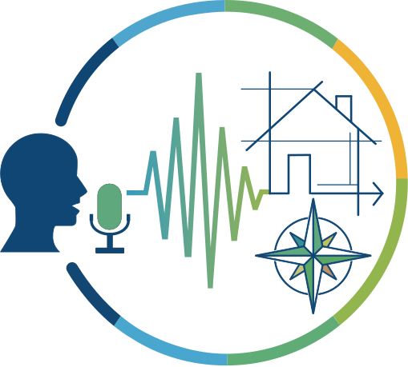

DAV
Diseñá en 2D y 3D mediante comandos de voz y descubrí una nueva forma de interactuar con las herramientas de FreeCAD a través del diseño asistido por voz.

Más videos en: YouTube (Próximamente)
Elegí tu sistema operativo
Descargá la versión para Windows o Linux, según corresponda.
Mantené la descarga
Si aparece una advertencia de seguridad, seleccioná «Mantener en el dispositivo».
Ejecutá la aplicación
Buscá el archivo de DAV y abrilo.
La primera vez que abras la aplicación, puede tardar unos minutos en iniciar mientras descarga los componentes necesarios. Este proceso solo será necesario durante la configuración inicial.